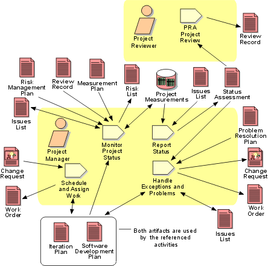

Disciplines >
Disciplines >
 Project Management >
Project Management >
 Workflow >
Monitor & Control Project
Workflow >
Monitor & Control Project
Disciplines >
Project Management >
Workflow >
Monitor & Control Project
Workflow Detail:
|
Topics |
 |
This workflow detail captures the daily, continuing, work of the Project Manager, covering:
- dealing with change requests that have been sanctioned by the Change Control Manager, and scheduling these for the current or future iterations;
- continuously monitoring the project in terms of active risks and objective measurements of progress and quality;
- regular reporting of project status, in the Status Assessment, to the Project Review Authority (PRA), which is the organizational entity to which the Project Manager is accountable;
- dealing with issues and problems as they are discovered, through the Activity: Monitor Project Status or otherwise, and driving these to closure according to the Artifact: Problem Resolution Plan. This may require that Change Requests be issued for work that cannot be authorized by the Project Manager alone.
The Project Manager needs a mix of organizational, planning, communication, time management, triage, and analytic skills for this part of the discipline. The Project Reviewer will need a strong background in project management, will have a deep understanding of the organization's business policies and practices, and be able to make judgments about the project's financial performance and performance against contractual obligations.
The Project Manager should put in place mechanisms to automate, as far as
possible, the collection and reduction of information (metrics, for example)
about the project. Time should be spent in analyzing trends, not in collection
and calculation. The responsibility for solution of problems that arise on a
project obviously ultimately rests with the Project Manager. However, there is a
class of technical problems that should be delegated to the Software Architect, for
example, for solution. The Project Manager's role is then to implement the
suggested solution - which may give rise to a secondary problem, say, lack of
resources, which does have to be solved by the Project Manager. This
demonstrates the kind of trust that must exist between the Project Manager and
the technical staff - the Project Manager expects the Software Architect to devise sound
technical solutions, and the Software Architect expects the Project Manager to put in
place the infrastructure and resources to implement them, contractual and
financial constraints permitting.
|
Rational Unified
Process
|